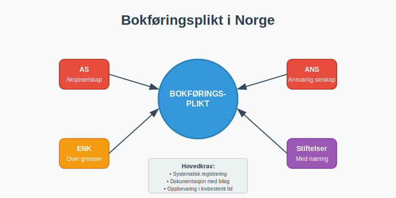
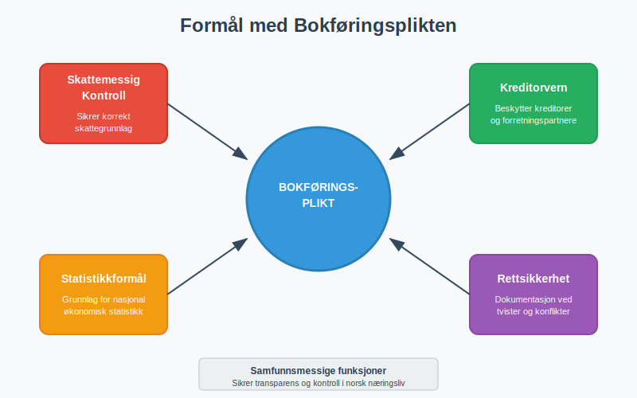
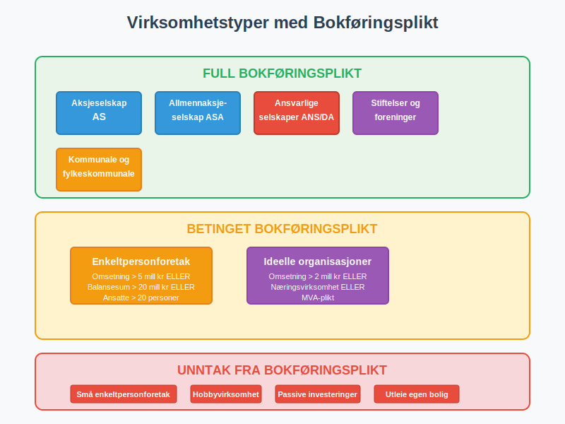
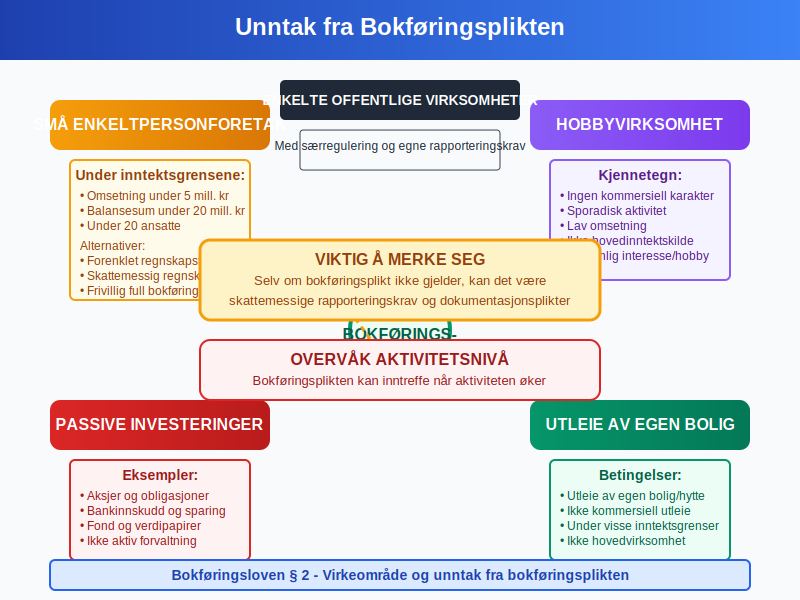
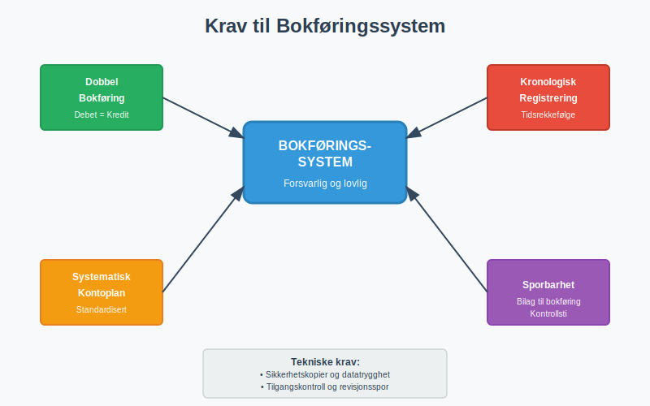
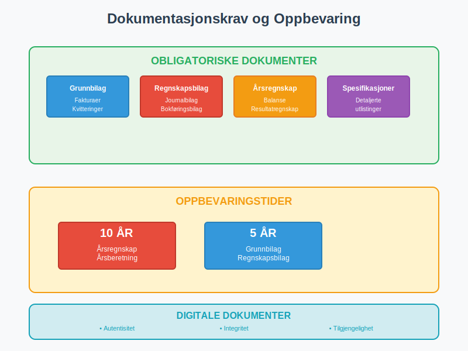
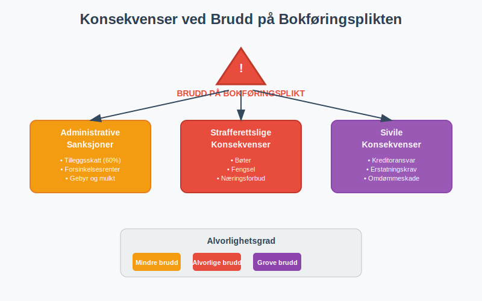
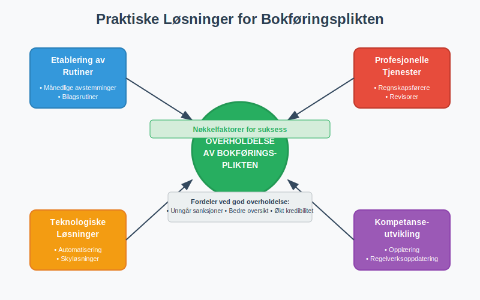

Bokføringsplikt er den lovpålagte forpliktelsen for virksomheter i Norge til å føre regnskap i henhold til bokføringsloven. Denne plikten sikrer transparens, kontroll og etterprøvbarhet i norsk næringsliv.

Hva er Bokføringsplikt?
Bokføringsplikt innebærer at næringsdrivende må systematisk registrere, dokumentere og oppbevare alle økonomiske transaksjoner i virksomheten. Plikten er forankret i bokføringsloven og omfatter:
- Systematisk registrering av alle forretningshendelser
- Dokumentasjon av transaksjoner med bilag
- Oppbevaring av regnskapsmateriale i lovbestemt tid
- Rapportering til offentlige myndigheter
Formål med Bokføringsplikten
Bokføringsplikten har flere viktige samfunnsmessige funksjoner:
- Skattemessig kontroll: Sikrer korrekt skattegrunnlag
- Kreditorvern: Beskytter kreditorer og forretningspartnere
- Statistikkformål: Grunnlag for nasjonal økonomisk statistikk
- Rettsikkerhet: Dokumentasjon ved tvister og konflikter

Hvem har Bokføringsplikt?
Bokføringsplikten gjelder alle næringsdrivende i Norge, men med noen viktige unntak og særregler.
Hovedregel: Alle Næringsdrivende
Følgende virksomheter har full bokføringsplikt:
- Aksjeselskaper (AS)
- Allmennaksjeselskaper (ASA)
- Ansvarlige selskaper (ANS og DA)
- Stiftelser og foreninger med næringsvirksomhet
- Enkeltpersonforetak over visse inntektsgrenser
- Kommunale og fylkeskommunale foretak

Inntektsgrenser for Enkeltpersonforetak
Enkeltpersonforetak har bokføringsplikt når én av følgende betingelser er oppfylt:
| Kriterium | Grenseverdi | Periode |
|---|---|---|
| Omsetning | Over 5 millioner kr | Siste regnskapsår |
| Balansesum | Over 20 millioner kr | Ved regnskapsårets slutt |
| Gjennomsnittlig antall ansatte | Over 20 personer | I løpet av regnskapsåret |
Særlige Bestemmelser
Primærnæringer
Jordbruk, skogbruk og fiske har spesielle regler:
- Forenklede krav for små primærnæringer
- Særskilte rapporteringskrav til Landbruksdirektoratet
- Mulighet for forenklet regnskapsføring under visse betingelser
Ideelle Organisasjoner
Ideelle organisasjoner og foreninger har bokføringsplikt når:
- Årlig omsetning overstiger 2 millioner kr
- Organisasjonen driver næringsvirksomhet
- Det foreligger mva-plikt
For en omfattende guide til regnskapsføring for foreninger og ideelle organisasjoner, inkludert særlige regler for medlemskontingent, tilskudd og skattefritak, se vår detaljerte artikkel om foreninger i regnskap.
Unntak fra Bokføringsplikten
Enkelte virksomheter er unntatt fra bokføringsplikten:
Små Enkeltpersonforetak
Enkeltpersonforetak under inntektsgrensene kan velge:
- Forenklet regnskapsføring (kontantprinsippet)
- Skattemessig regnskap som minimum
- Frivillig full bokføring for bedre oversikt
Andre Unntak
- Hobbyvirksomhet uten kommersiell karakter
- Passive investeringer i aksjer og obligasjoner
- Utleie av egen bolig (under visse betingelser)
- Enkelte offentlige virksomheter med særregulering

Når Inntrer Bokføringsplikten?
Bokføringsplikten inntrer på ulike tidspunkter avhengig av virksomhetstype:
For Selskaper
- Aksjeselskaper: Fra registrering i Foretaksregisteret
- Ansvarlige selskaper: Fra oppstart av næringsvirksomhet
- Stiftelser: Fra registrering eller oppstart av næringsvirksomhet
For Enkeltpersonforetak
Plikten inntrer når inntektsgrensene overskrides:
- Prospektivt: Når det er sannsynlig at grensene overskrides
- Retrospektivt: Senest når grensene faktisk overskrides
- Kontinuerlig vurdering: Årlig vurdering av om plikten fortsatt gjelder
Tidspunkt for Implementering
| Situasjon | Frist for implementering |
|---|---|
| Nyetablert virksomhet | Fra oppstart |
| Overskridelse av grenser | Innen 3 måneder |
| Endring av selskapsform | Fra endringsdato |
| Oppkjøp/fusjon | Fra transaksjonstidspunkt |
Krav til Bokføringssystem
Virksomheter med bokføringsplikt må etablere et forsvarlig bokføringssystem som oppfyller lovens krav.
Grunnleggende Systemkrav
- Dobbel bokføring: Alle transaksjoner må bokføres med debet og kredit
- Kronologisk registrering: Transaksjoner registreres i tidsrekkefølge
- Systematisk kontoplan: Bruk av standardisert kontoplan
- Sporbarhet: Klar sammenheng mellom bilag og bokføring

Tekniske Krav
Digitale Systemer
Moderne bokføringssystemer må ha:
- Sikkerhetskopier og datatrygghet
- Tilgangskontroll og brukerrettigheter
- Revisjonsspor for alle endringer
- Eksportmuligheter (SAF-T format)
Papirbaserte Systemer
For virksomheter som fortsatt bruker papir:
- Nummererte bilag og journaler
- Sikker oppbevaring mot brann og vannskade
- Systematisk arkivering for enkel gjenfinning
Integrasjon med Andre Systemer
Bokføringssystemet bør integreres med:
- Fakturasystemer for automatisk fakturering
- Lønnssystemer for arbeidsgiveravgift og lønnskostnader
- Banksystemer for automatisk bankavstemming
- Mva-systemer for rapportering til Skatteetaten
Dokumentasjonskrav
Bokføringsplikten innebærer strenge dokumentasjonskrav som sikrer etterprøvbarhet.
Obligatoriske Dokumenter
Alle virksomheter med bokføringsplikt må oppbevare:
- Grunnbilag: Fakturaer, kvitteringer, kontrakter
- Regnskapsbilag: Journalbilag og bokføringsbilag
- Årsregnskap: Balanse og resultatregnskap
- Spesifikasjoner: Detaljerte utlistinger av poster
Oppbevaringskrav
| Dokumenttype | Oppbevaringstid | Krav til format |
|---|---|---|
| Årsregnskap | 10 år | Original eller kopi |
| Grunnbilag | 5 år | Original eller digital kopi |
| Regnskapsbilag | 5 år | Kronologisk ordnet |
| Korrespondanse | 5 år | Relevant for regnskapet |
Digitale Dokumenter
For digitale dokumenter gjelder særlige krav:
- Autentisitet: Dokumentet må være ekte og uendret
- Integritet: Beskyttelse mot endringer
- Tilgjengelighet: Mulighet for utskrift og visning
- Lesbarhet: Dokumentet må være lesbart gjennom hele oppbevaringsperioden

Frister og Rapportering
Bokføringsplikten medfører spesifikke frister for registrering og rapportering.
Løpende Bokføring
- Månedlig registrering: Alle transaksjoner skal registreres innen månedsskiftet
- Bilagsregistrering: Bilag skal registreres fortløpende
- Avstemminger: Månedlige avstemminger av balanseposter
Årsoppgjør
| Aktivitet | Frist | Merknad |
|---|---|---|
| Årsregnskap | 5 måneder etter regnskapsårets slutt | For de fleste virksomheter |
| Selvangivelse | 31. mai | For enkeltpersonforetak |
| Næringsoppgave | 31. mai | For alle næringsdrivende |
| Årsberetning | Sammen med årsregnskapet | For større virksomheter |
Mva-rapportering
Virksomheter med mva-plikt må rapportere:
- Månedlig: For store virksomheter (omsetning > 50 mill. kr)
- To-månedlig: For mellomstore virksomheter (omsetning 1-50 mill. kr)
- Årlig: For små virksomheter (omsetning < 1 mill. kr)
Konsekvenser ved Brudd på Bokføringsplikten
Brudd på bokføringsplikten kan få alvorlige konsekvenser både juridisk og økonomisk.
Administrative Sanksjoner
Skatteetaten kan ilegge:
- Tilleggsskatt: Inntil 60% av undradd skatt
- Forsinkelsesrenter: På forfalte skatter og avgifter
- Gebyr: For manglende eller forsinket rapportering
- Tvangsmulkt: Ved gjentatte brudd
Strafferettslige Konsekvenser
Alvorlige brudd kan medføre:
- Bøter: Betydelige økonomiske sanksjoner
- Fengsel: I grove tilfeller av skatteunndragelse
- Næringsforbud: Forbud mot å drive næringsvirksomhet
- Erstatningsansvar: Overfor kreditorer og forretningspartnere

Sivile Konsekvenser
- Kreditoransvar: Personlig ansvar for selskapets gjeld
- Erstatningskrav: Fra skadelidte parter
- Konkursmessige konsekvenser: Vanskeligere rekonstruksjon
- Omdømmeskade: Tap av tillit i markedet
Praktiske Råd for Overholdelse
For å sikre god overholdelse av bokføringsplikten, anbefales følgende tiltak:
Etablering av Rutiner
- Månedlige avstemminger: Systematisk kontroll av alle balanseposter
- Bilagsrutiner: Klar prosess for mottak og registrering av bilag
- Backup-rutiner: Regelmessig sikkerhetskopi av regnskapsdata
- Kompetanseutvikling: Oppdatering på regelverksendringer
Bruk av Profesjonelle Tjenester
Mange virksomheter drar nytte av:
- Regnskapsførere: Profesjonell håndtering av løpende bokføring
- Revisorer: Kontroll og kvalitetssikring av regnskapet
- Rådgivere: Veiledning om komplekse regnskapsspørsmål
- IT-leverandører: Teknisk støtte for regnskapssystemer
Teknologiske Løsninger
Moderne teknologi kan forenkle bokføringsplikten:
- Automatisering: Reduserer manuelt arbeid og feilrisiko
- Integrasjon: Kobler sammen ulike forretningssystemer
- Skyløsninger: Sikker tilgang fra flere lokasjoner
- Kunstig intelligens: Automatisk kategorisering og kontroll

Fremtidige Utviklingstrekk
Bokføringsplikten er i kontinuerlig utvikling påvirket av teknologiske og regulatoriske endringer.
Digitalisering
- Elektroniske bilag: Økt bruk av digitale dokumenter
- Automatisk rapportering: Direkte overføring til offentlige registre
- Sanntidsrapportering: Kontinuerlig oppdatering av skattemyndigheter
- Blockchain-teknologi: Økt sikkerhet og sporbarhet
Regulatoriske Endringer
- Internasjonale standarder: Tilpasning til IFRS og EU-direktiver
- Miljørapportering: Krav til bærekraftsrapportering
- Transparensdirektivet: Økt åpenhet om eierskap og kontroll
- Anti-hvitvaskingsregler: Skjerpede krav til kundetiltak
Forenklinger
Myndighetene arbeider med:
- Reduserte rapporteringskrav: For små virksomheter
- Standardiserte løsninger: Enklere implementering
- Bedre veiledning: Klarere retningslinjer og eksempler
- Digitale tjenester: Mer brukervennlige offentlige systemer
Konklusjon
Bokføringsplikten er en fundamental del av norsk næringsliv som sikrer transparens, kontroll og etterprøvbarhet. Selv om plikten kan virke kompleks, finnes det gode verktøy og tjenester som gjør overholdelse håndterbar.
Viktige Takeaways
- Alle næringsdrivende har i utgangspunktet bokføringsplikt
- Inntektsgrenser bestemmer plikten for enkeltpersonforetak
- Systematisk tilnærming er nøkkelen til god overholdelse
- Profesjonell hjelp kan være en god investering
- Teknologi forenkler mange aspekter ved bokføringsplikten
Ved å etablere gode rutiner og bruke riktige verktøy kan virksomheter ikke bare oppfylle lovkravene, men også dra nytte av regnskapet som et verdifullt styringsverktøy.
For mer informasjon om relaterte temaer, se våre artikler om bokføring, bokføringsloven og regnskap generelt.